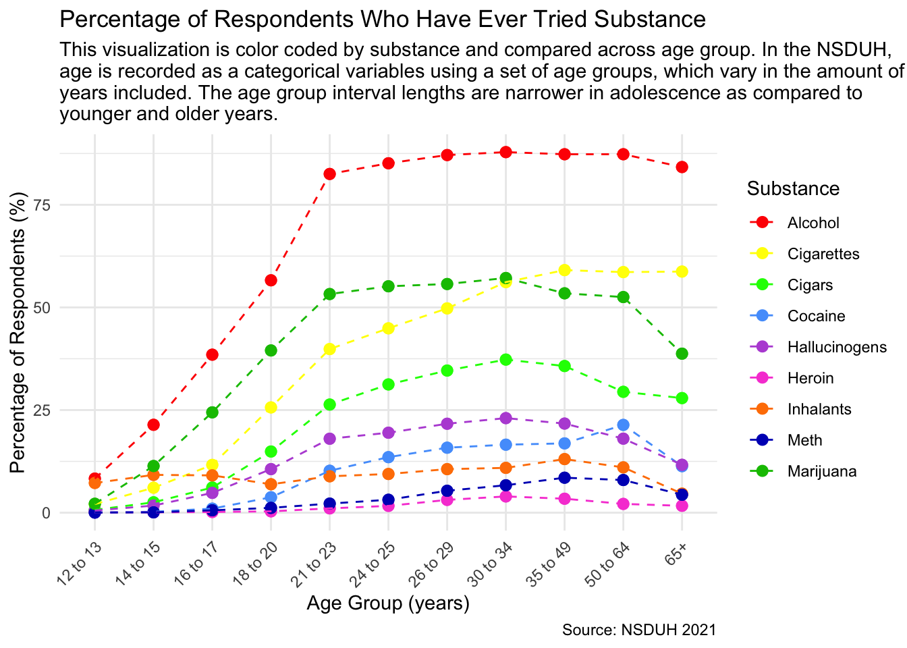
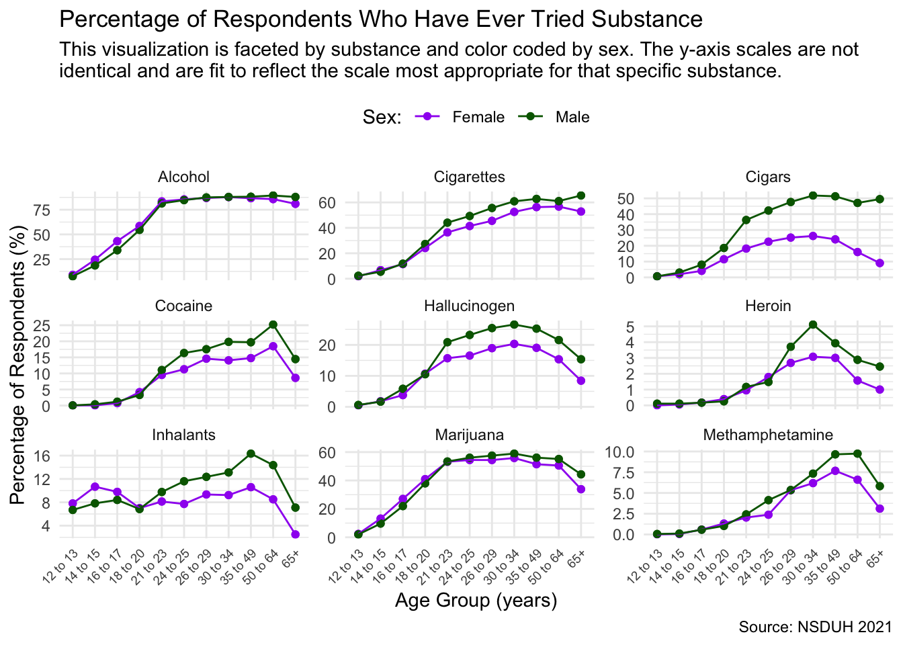
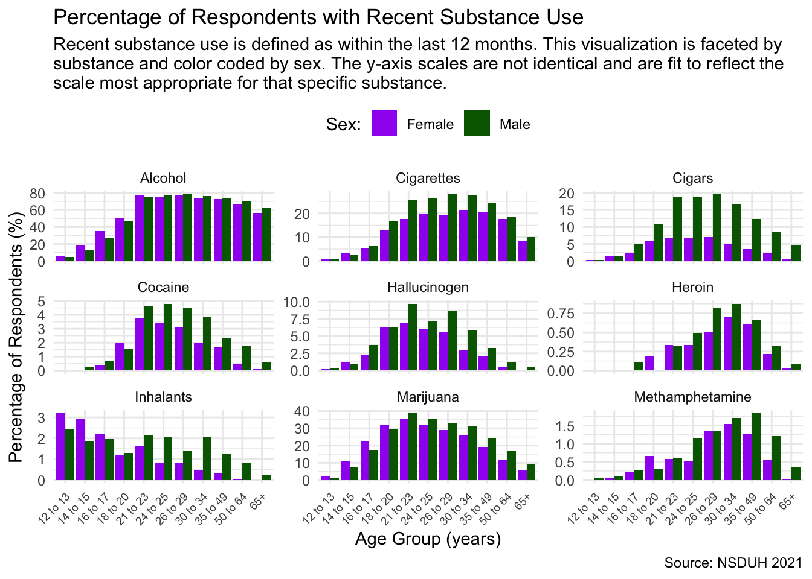
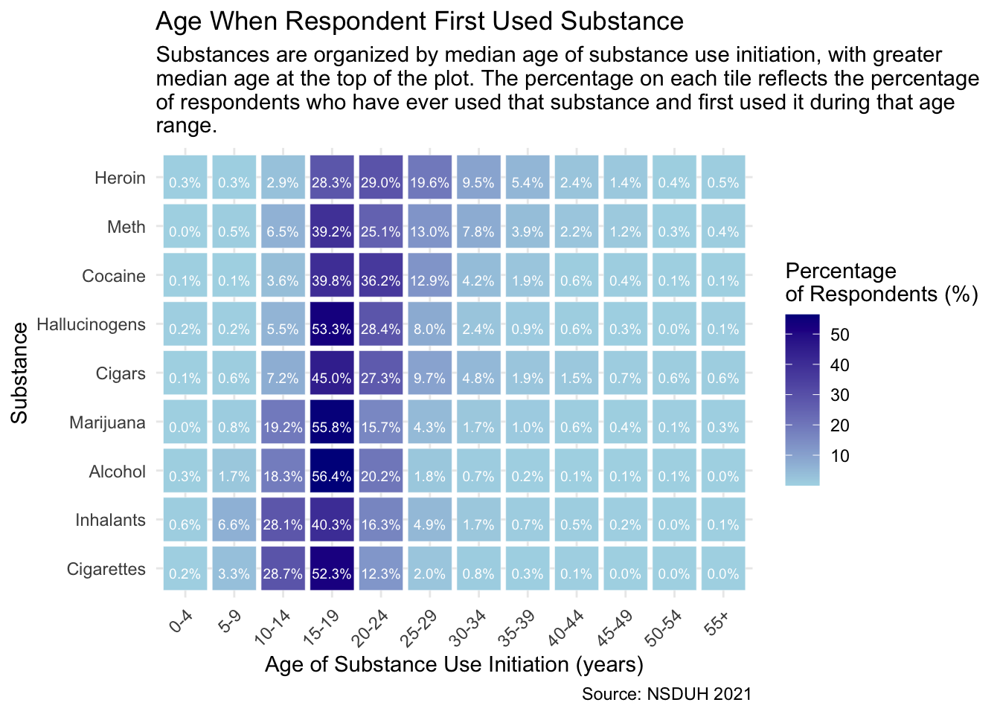

How does recreational substance use vary across age and sex?
A person’s relationship with substance use is dynamic and may change throughout their life. With this in mind, researchers are often interested in exploring how different groups of people use recreational drugs. Recently, there have been increased concerns about the interaction of substance use and mental health issues for youth1. Other reports have described increased binge drinking and marijuana use among middle aged adults2 and substance use disorders among older adults3. While men are more likely to use substances than women4, stigmatization contributes to women being less likely to connect with substance use treatment resources5. Overall, understanding how different groups of people interact with substances helps medical and public health professionals support these impacted groups.
In this analysis, I am interested in further exploring how substance use varies across age and sex in the United States. To do so, I will be using survey data from the National Survey on Drug Use and Health. This analysis is intended for anyone interested in public health and trends related to these topics.
Data Source
The Substance Abuse and Mental Health Services Administration (SAMHSA) administers the NSDUH. The agency focuses on behavioral health and was established by congress in 1992. As noted in the SAMHSA’s Strategic Plan6, the agency’s top five priorities are:
Preventing Overdose
Enhancing Access to Suicide Prevention and Crisis Care
Promoting Resilience and Emotional Health for Children, Youth and Families
Integrating Behavioral and Physical Health Care
Strengthening the Behavioral Health Workforce
I used data from the 2021 National Survey of Drug Use and Health. The NSDUH has been conducted by the U.S. government since 1971. This survey explores questions related to substance use, mental health, and other health concerns. I used this link to download the dataset and the codebook can be found here.
Data Wrangling
Throughout this analysis, I use data collected about substance use related to cigarettes, cigars, alcohol, marijuana, cocaine, heroin, hallucinogens, inhalants, methamphetamine, and inhalants. While I focused on recreational drugs, the NSDUH explores different types of substances, including prescription medications, as well as specific substances within a class of drugs, such as LSD.
I primarily used tidyverse functions to clean and transform my data. I have added comments to the included code to further highlight the different steps I took.
Code
# download the haven package to use the stata filelibrary(haven)# download the tidyverse packagelibrary(tidyverse)# importing the raw datasetnsduh_2021_raw <-read_dta("~/Downloads/NSDUH-2021-DS0001-bndl-data-stata_v3/NSDUH_2021.DTA")# creating a vector of columns I want to keep from the raw datasetkeep_columns <-c("AGE3", "irsex", "cigever", "cigtry", "ircigrc", "cigarevr", "cigartry", "ircgrrc", "alcever", "alctry", "iralcrc", "mjever", "mjage", "irmjrc", "cocever", "cocage", "ircocrc", "herever", "herage", "irherrc", "hallucevr", "hallucage", "irhallucrec", "methamevr", "methamage", "irmethamrec", "inhalever", "inhalage", "irinhalrec")# creating a vector of the variables that I need to be transformed to factorsfactors <-c("age", "sex", "cig_ever", "cigar_ever", "alc_ever", "mj_ever", "coc_ever", "her_ever", "halluc_ever", "meth_ever", "inhal_ever", "cig_lastyear", "cigar_lastyear", "alc_lastyear", "mj_lastyear", "coc_lastyear", "her_lastyear", "halluc_lastyear", "meth_lastyear", "inhal_lastyear")# cleaning the raw data to create new datasetnsduh_2021_v1 <- nsduh_2021_raw %>%# selecting desired variablesselect(keep_columns) %>%# create numerical variable for age groupsmutate(agenum =case_when( AGE3 ==1~12.5, AGE3 ==2~14.5, AGE3 ==3~16.5, AGE3 ==4~19, AGE3 ==5~22, AGE3 ==6~24.5, AGE3 ==7~27.5, AGE3 ==8~32, AGE3 ==9~42, AGE3 ==10~57, AGE3 ==11~70,TRUE~NA ),# create categorical variable for age groupsage =case_when( AGE3 ==1~"12 to 13", AGE3 ==2~"14 to 15", AGE3 ==3~"16 to 17", AGE3 ==4~"18 to 20", AGE3 ==5~"21 to 23", AGE3 ==6~"24 to 25", AGE3 ==7~"26 to 29", AGE3 ==8~"30 to 34", AGE3 ==9~"35 to 49", AGE3 ==10~"50 to 64", AGE3 ==11~"65+",TRUE~NA),# create categorical variable for sexsex =case_when( irsex ==1~"Male", irsex ==2~"Female",TRUE~NA),# create categorical variable for whether respondent has ever used cigarettescig_ever =case_when( cigever ==1~"Yes", cigever ==2~"No",TRUE~NA),# create categorical variable for whether respondent has ever used cigarscigar_ever =case_when( cigarevr ==1~"Yes", cigarevr ==2~"No",TRUE~NA),# create categorical variable for whether respondent has ever used alcoholalc_ever =case_when( alcever ==1~"Yes", alcever ==2~"No",TRUE~NA),# create categorical variable for whether respondent has ever used marijuanamj_ever =case_when( mjever ==1~"Yes", mjever ==2~"No",TRUE~NA),# create categorical variable for whether respondent has ever used cocainecoc_ever =case_when( cocever ==1~"Yes", cocever ==2~"No",TRUE~NA),# create categorical variable for whether respondent has ever used heroinher_ever =case_when( herever ==1~"Yes", herever ==2~"No",TRUE~NA),# create categorical variable for whether respondent has ever used hallucinogenshalluc_ever =case_when( hallucevr ==1~"Yes", hallucevr ==91~"No",TRUE~NA),# create categorical variable for whether respondent has ever used methamphetaminemeth_ever =case_when( methamevr ==1~"Yes", methamevr ==2~"No",TRUE~NA),# create categorical variable for whether respondent has ever used inhalantsinhal_ever =case_when( inhalever ==1~"Yes", inhalever ==91~"No",TRUE~NA),# create numeric variable for age when first tried cigarettescig_tryage =ifelse( cigtry >=1& cigtry <=100, cigtry, NA),# create numeric variable for age when first tried cigarscigar_tryage =ifelse( cigartry >=1& cigartry <=100, cigartry, NA),# create numeric variable for age when first tried alcoholalc_tryage =ifelse( alctry >=1& alctry <=100, alctry, NA),# create numeric variable for age when first tried cocainecoc_tryage =ifelse( cocage >=1& cocage <=100, cocage, NA),# create numeric variable for age when first tried hallucinogenshalluc_tryage =ifelse( hallucage >=1& hallucage <=100, hallucage, NA),# create numeric variable for age when first tried heroinher_tryage =ifelse( herage >=1& herage <=100, herage, NA),# create numeric variable for age when first tried methamphetaminemeth_tryage =ifelse( methamage >=1& methamage <=100, methamage, NA),# create numeric variable for age when first tried marijuanamj_tryage =ifelse( mjage >=1& mjage <=100, mjage, NA),# create numeric variable for age when first tried inhalantsinhal_tryage =ifelse( inhalage >=1& inhalage <=100, inhalage, NA),# create categorical variable for whether respondent had cigarettes in last yearcig_lastyear =case_when( ircigrc %in%c(1, 2) ~"Yes", ircigrc %in%c(3, 4, 9) ~"No",TRUE~NA),# create categorical variable for whether respondent had cigars in last yearcigar_lastyear =case_when( ircgrrc %in%c(1, 2) ~"Yes", ircgrrc %in%c(3, 4, 9) ~"No",TRUE~NA),# create categorical variable for whether respondent had alcohol in last yearalc_lastyear =case_when( iralcrc %in%c(1, 2) ~"Yes", iralcrc %in%c(3, 4, 9) ~"No",TRUE~NA),# create categorical variable for whether respondent had cocaine in last yearcoc_lastyear =case_when( ircocrc %in%c(1, 2) ~"Yes", ircocrc %in%c(3, 9) ~"No",TRUE~NA),# create categorical variable for whether respondent had hallucinogens in last yearhalluc_lastyear =case_when( irhallucrec %in%c(1, 2) ~"Yes", irhallucrec %in%c(3, 9) ~"No",TRUE~NA),# create categorical variable for whether respondent had heroin in last yearher_lastyear =case_when( irherrc %in%c(1, 2) ~"Yes", irherrc %in%c(3, 9) ~"No",TRUE~NA),# create categorical variable for whether respondent had methamphetamine in last yearmeth_lastyear =case_when( irmethamrec %in%c(1, 2) ~"Yes", irmethamrec %in%c(3, 9) ~"No",TRUE~NA),# create categorical variable for whether respondent had marijuana in last yearmj_lastyear =case_when( irmjrc %in%c(1, 2) ~"Yes", irmjrc %in%c(3, 9) ~"No",TRUE~NA),# create categorical variable for whether respondent had inhalants in last yearinhal_lastyear =case_when( irinhalrec %in%c(1, 2) ~"Yes", irinhalrec %in%c(3, 9) ~"No",TRUE~NA),# transforms listed varialbes to factorsacross(factors, as.factor) )
Analysis and Results
Substances Ever Used Across Age
How does any lifetime drug use vary across age?
I used survey data asking respondents whether they had ever used a substance in their life. As we may expect, fewer people have tried substances traditionally thought of as “harder drugs,” like heroin and meth, than legal substances, like alcohol and cigarettes. In older age groups, there is a wider gaps in exposure across the different substances. Perhaps in younger age groups, especially when none of these substances are legal, the respondents who are using substances are less discriminatory about which substance they do use.
Visualization Note
Please note that the age categories are not of equal size. These are the same age categories used in the NSDUH survey. The dashed lines connecting the points are meant to help guide the reader to see trends across these age groups, but not imply continuous age data
Code
# loading a package for other color optionslibrary(paletteer)substance_ever <- nsduh_2021_v1 %>%filter(across(c(cig_ever, cigar_ever, alc_ever, mj_ever, coc_ever, her_ever, halluc_ever, meth_ever, inhal_ever), ~!is.na(.))) %>%pivot_longer(cols =c(cig_ever, cigar_ever, alc_ever, mj_ever, coc_ever, her_ever, halluc_ever, meth_ever, inhal_ever), names_to ="Substance", values_to ="Ever_Tried") %>%group_by(age, Substance, Ever_Tried) %>%summarise(Count =n(), .groups ='drop') %>%group_by(age, Substance) %>%mutate(Percentage =sum(Count[Ever_Tried =="Yes"]) /sum(Count) *100)substance_ever$Substance <-factor(substance_ever$Substance)ggplot(substance_ever, aes(x = age, y = Percentage, color = Substance, group = Substance)) +geom_point(size =2.5) +geom_path(linetype =2) +labs(title ="Percentage of Respondents Who Have Ever Tried Substance",subtitle ="This visualization is colored by substance and compared across age group. In the NSDUH, age \nis recorded as a categorical variables using a set of age groups, which vary in the amount of \nyears. The age group interval lengths are narrower in adolescence as compared to younger and \nolder years.",x ="Age Group",y ="Percentage of Respondents",caption ="Source: NSDUH 2021") +theme_minimal() +theme(axis.text.x =element_text(angle =45, hjust =1)) +scale_colour_manual(values = paletteer::paletteer_d("ggprism::stained_glass"),labels =c(cig_ever ="Cigarettes",cigar_ever ="Cigars",alc_ever ="Alcohol",mj_ever ="Marijuana",coc_ever ="Cocaine",her_ever ="Heroin",halluc_ever ="Hallucinogens",meth_ever ="Meth",inhal_ever ="Inhalants" ))

Substances Ever Used across Sex
How does any lifetime drug use vary across sex and age?
This analysis uses the same survey data as the previous section, though the responses are grouped by sex, which was recorded as a binary variable in the survey data. In most cases, the percentage of male participants who have experimented with these substances in greater than the percentage of female participants. The difference in these percentages appears to be larger in older age groups.
Visualization Note
Please note that the scales on the y-axis are not identical across the faceted plots for the next two visualizations. Because of the wide variation in prevalance of use for these different substances, I chose to adjust the y-axis’ scale in order to clarify the use differences across sex.
Code
substance_ever_sex <- nsduh_2021_v1 %>%filter(across(c(cig_ever, cigar_ever, alc_ever, mj_ever, coc_ever, her_ever, halluc_ever, meth_ever, inhal_ever), ~!is.na(.))) %>%pivot_longer(cols =c(cig_ever, cigar_ever, alc_ever, mj_ever, coc_ever, her_ever, halluc_ever, meth_ever, inhal_ever), names_to ="Substance", values_to ="Ever_Tried") %>%group_by(age, sex, Substance, Ever_Tried) %>%summarise(Count =n(), .groups ='drop') %>%group_by(age, sex, Substance) %>%mutate(Percentage =sum(Count[Ever_Tried =="Yes"]) /sum(Count) *100,substance_label =case_when( Substance =="cig_ever"~"Cigarettes", Substance =="cigar_ever"~"Cigars", Substance =="alc_ever"~"Alcohol", Substance =="mj_ever"~"Marijuana", Substance =="coc_ever"~"Cocaine", Substance =="her_ever"~"Heroin", Substance =="halluc_ever"~"Hallucinogen", Substance =="meth_ever"~"Methamphetamine", Substance =="inhal_ever"~"Inhalants",TRUE~NA ))substance_ever_sex$Substance <-factor(substance_ever_sex$Substance)ggplot(substance_ever_sex, aes(x = age, y = Percentage, color = sex, group = sex)) +geom_point() +geom_path() +labs(title ="Percentage of Respondents Who Have Ever Tried Substance",subtitle ="This visualization is faceted by substance and color coded by sex. The y-axis scales are not \nidentical and are fit to reflect the scale most appropriate for that specific substance.",x ="Age Group",y ="Percentage of Respondents",color ="Sex:",caption ="Source: NSDUH 2021") +theme_minimal() +theme(axis.text.x =element_text(angle =45, hjust =1, size =7)) +facet_wrap(~ substance_label, scales ="free_y", ncol =3) +scale_color_manual(values =c("Female"="purple", "Male"="darkgreen")) +theme(legend.position ="top")

Recent Substance Use Across Age and Sex
How does recent drug use vary across age and sex?
In this section, I used survey data about how recent the respondent has used a substance. While there were often more categories available, depending on the substance, I chose to define “recent use” as happening in the last 12 months and coded the responses to reflect a binary variable. Similar to the responses related to any lifetime use in my earlier visualization, male respondents are overall more likely to use these substances than female participants.
Code
proportion_lastyear <- nsduh_2021_v1 %>%pivot_longer(cols =c(cig_lastyear, cigar_lastyear, alc_lastyear, mj_lastyear, coc_lastyear, her_lastyear, halluc_lastyear, meth_lastyear, inhal_lastyear), names_to ="Substance", values_to ="Last_Year") %>%filter(!is.na(Last_Year)) %>%group_by(age, sex, Substance, Last_Year) %>%summarise(Count =n(), .groups ='drop') %>%group_by(age, sex, Substance) %>%mutate(Percentage =sum(Count[Last_Year =="Yes"]) /sum(Count) *100,substance_label =case_when( Substance =="cig_lastyear"~"Cigarettes", Substance =="cigar_lastyear"~"Cigars", Substance =="alc_lastyear"~"Alcohol", Substance =="mj_lastyear"~"Marijuana", Substance =="coc_lastyear"~"Cocaine", Substance =="her_lastyear"~"Heroin", Substance =="halluc_lastyear"~"Hallucinogen", Substance =="meth_lastyear"~"Methamphetamine", Substance =="inhal_lastyear"~"Inhalants",TRUE~NA ))ggplot(proportion_lastyear, aes(x = age, y = Percentage, fill = sex, group = sex)) +geom_bar(stat ="identity", position ="dodge") +labs(title ="Percentage of Respondents with Recent Substance Use",subtitle ="Recent substance use is defined as within the last 12 months. This visualization is faceted by \nsubstance and color coded by sex. The y-axis scales are not identical and are fit to reflect the \nscale most appropriate for that specific substance.",x ="Age Group",y ="Percentage of Respondents",fill ="Sex:",caption ="Source: NSDUH 2021") +theme_minimal() +scale_fill_manual(values =c("Female"="purple", "Male"="darkgreen")) +theme(axis.text.x =element_text(angle =45, hjust =1, size =7)) +facet_wrap(~ substance_label, scales ="free_y", ncol =3) +theme(legend.position ="top")

Age of Substance Use Initiation
When are people most likely to try a drug for the first time?
To explore this question, I used survey data asking respondents about the age of their first use of a substance. While this data was numeric with integers for age, I chose to create age group categories instead. For nearly all of the substances, the age group 15-19 is the most common time when people use for the first time. In general, substances generally considered “harder drugs” are initiated at older ages than drugs that are legal for adults.
Code
median_Substance_order <- nsduh_2021_v1 %>%pivot_longer(cols =c(cig_tryage, cigar_tryage, alc_tryage, mj_tryage, coc_tryage, her_tryage, halluc_tryage, meth_tryage, inhal_tryage), names_to ="Substance", values_to ="Try_Age") %>%group_by(Substance) %>%summarise(Median_Try_Age =median(Try_Age, na.rm =TRUE)) %>%arrange(Median_Try_Age) %>%pull(Substance)custom_labels <-c("cig_tryage"="Cigarettes","cigar_tryage"="Cigars","alc_tryage"="Alcohol","mj_tryage"="Marijuana","coc_tryage"="Cocaine","her_tryage"="Heroin","halluc_tryage"="Hallucinogens","meth_tryage"="Meth","inhal_tryage"="Inhalants")proportion_data <- nsduh_2021_v1 %>%pivot_longer(cols =c(cig_tryage, cigar_tryage, alc_tryage, mj_tryage, coc_tryage, her_tryage, halluc_tryage, meth_tryage, inhal_tryage), names_to ="Substance", values_to ="Try_Age") %>%filter(!is.na(Try_Age)) %>%mutate(Try_Age_Group =case_when( Try_Age >=0& Try_Age <5~"0-4", Try_Age >=5& Try_Age <10~"5-9", Try_Age >=10& Try_Age <15~"10-14", Try_Age >=15& Try_Age <20~"15-19", Try_Age >=20& Try_Age <25~"20-24", Try_Age >=25& Try_Age <30~"25-29", Try_Age >=30& Try_Age <35~"30-34", Try_Age >=35& Try_Age <40~"35-39", Try_Age >=40& Try_Age <45~"40-44", Try_Age >=45& Try_Age <50~"45-49", Try_Age >=50& Try_Age <55~"50-54", Try_Age >=55~"55+",TRUE~"Other" )) %>%mutate(Try_Age_Group =factor(Try_Age_Group, levels =c("0-4", "5-9", "10-14", "15-19", "20-24", "25-29", "30-34", "35-39", "40-44", "45-49", "50-54", "55+", "Other"))) %>%group_by(Substance, Try_Age_Group) %>%count() %>%ungroup() %>%group_by(Substance) %>%mutate(proportion = n /sum(n) *100) %>%ungroup()ggplot(proportion_data, aes(x = Try_Age_Group, y =factor(Substance, levels = median_Substance_order), fill = proportion)) +geom_tile(width =0.9, height =0.9, color ="white") +geom_text(aes(label =sprintf("%.1f%%", proportion)), vjust =1, color ="white", size =2.5) +scale_fill_gradient(low ="lightblue", high ="darkblue") +theme_minimal() +labs(title ="Age When Respondents First Used Substance",subtitle ="Substances are organized by median age of substance use initiation, \nwith greater median age at the top of the plot. Respondents are included \nif they have ever used the substance.",x ="Age of Substance Use Initiation (years)",y ="",fill ="Percentage \nof Respondents",caption ="Source: NSDUH 2021" ) +theme(axis.text.x =element_text(angle =45, hjust =1)) +scale_y_discrete(labels = custom_labels)

Summary
Substance use varies widely across age and sex. Across the NSDUH age groups, substance use experience varies widely. The types of drugs that respondents have ever used varies across age groups. In addition, there is a gender gap in the number of respondents who have ever used these substances. The number of people who have used a substance in the last 12 months also varies across age group and sex. In general, respondents were most likely to have first tried a substance in their later teenage years. This analysis is only the tip of the iceberg in exploring demographic differences in substance use. I am so excited to continue learning about statistical analyses and epidemiology so that I will become better equipped to continue exploring these questions and investigating these topics.